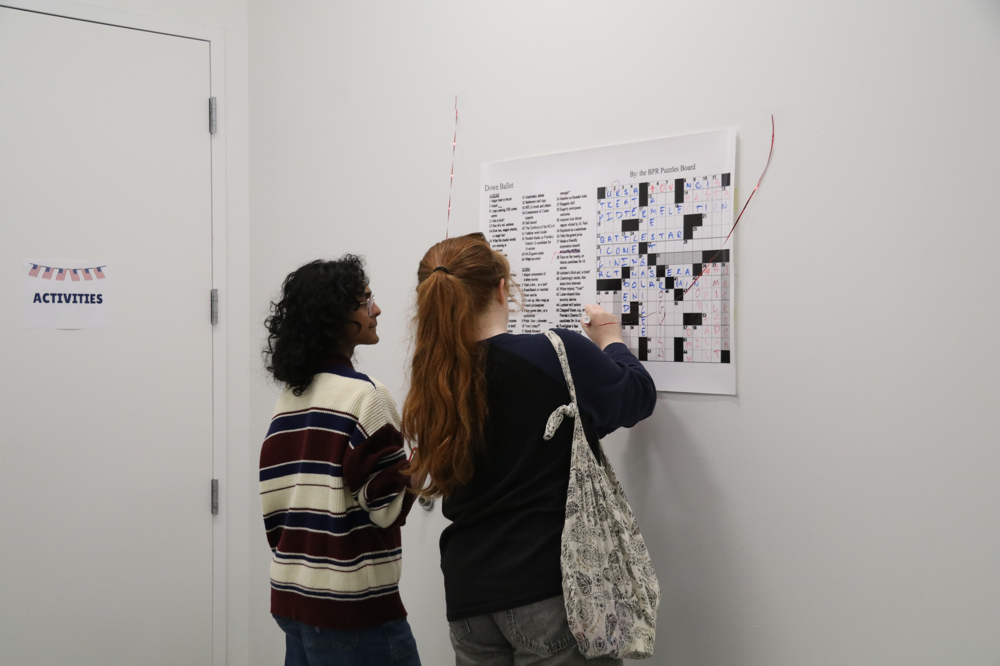

Brown Political Union hosts election night watch party

Rhode Island polls may be closed, but for many Brown students, the night has just begun. The Brown Political Union has taken over Friedman Hall for a watch party, along with games, pizza and ice cream.
Director of the Taubman Center for American Politics Eric Patashnik, who is also a professor of public policy and political science, delivered a talk on the stakes of tonight’s election for control of the Senate. Democrats must net four Republican seats tonight — and protect their 13 current seats — to win a majority.
Though other races are important, the senate is “the big enchilada,” Patashnik said. According to Patashnik, the Democrats’ chances at taking the chamber hinges on increasing voter disapproval of President Trump — and he said that he believes tonight will likely be a good night for the party.
Patashnik explained that members of the same party as sitting presidents generally have rough nights during midterms, in part because voters are frustrated with the current administration. In Trump’s case, those issues are the economy, gas prices and foreign policy — particularly the war in Iran.
But some Republican seats may be hard to win. In Maine, for example, Sen. Susan Collins (R-Maine) has a history of outperforming in elections as a Republican senator in a blue state.
“I will not believe that Susan Collins is defeated until I read it in the newspaper,” he said.
As Patashnik’s talk continued, his points seemed to be proven in real time, as Democrats notched victories in North Carolina and New Hampshire, though Republicans successfully defended their seat in Florida.
Outside of the talk, the building was brimming with anticipation.
Claire Rozek ’30 came to the watch party with friends, and hailing from Texas, she is keeping a close eye on her home state. When asked which race she was most excited for, she instantly replied with “Talarico, obviously,” referring to the Senate race between Democrat James Talarico and Republican Ken Paxton.
.jpg)